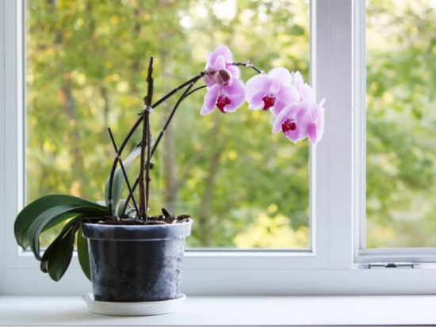
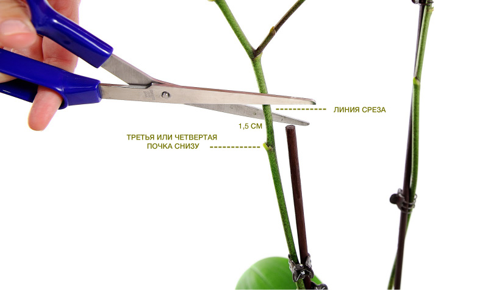

Шаг 1. Отдых и изоляция
После переезда в свой новый дом орхидея переживает стресс, поэтому ее нужно просто оставить в покое и в изоляции от других растений на первые 2-3 недели. Это нужно для того, чтобы новоприбывший цветок и остальные растения в доме не заразили друг друга возможными болезнями или насекомыми. На время карантина для орхидеи подойдет любое место (даже с недостатком освещения) подальше от батареи, фруктов, прямых солнечных лучей и сквозняков. В первый день прозрачную упаковку лучше не снимать, а, пока орхидея отдыхает, вы как раз можете ознакомиться с правилами ухода.
Шаг 2. Проводим осмотр
В день покупки или через день после покупки нужно провести осмотр цветка:
- Поиск насикомых.
Первым делом смотрим, нет ли в цветке насекомых: мошек, подуров, трипсов и прочих вредителей. См. также: Как избавиться от мошек в цветах - Осмотр листьев.
Заметили фиолетовые прожилки или пожелтевшие края листьев? Это нормально. А вот мокрые гнилые или желтые пятна, а также вялые морщинистые листья – уже проблема. - Осмотр субстрата.
Если есть кусочки коры с белым налетом, то их нужно сразу убрать и выбросить. Если есть зеленые водоросли, то это не страшно, но лучше проделать в горшочке несколько отверстий при помощи горячего ножа/гвоздя в тех местах, где корни не соприкасаются со стенками горшка. Если заметили, что в субстрате растут 1-2 маленьких грибочка, то их нужно убрать, сделать в горшочке отверстия и уменьшить полив. Если грибочков больше, то загляните в таблицу «Проблемы и решения» в конце статьи. Если вы заметили, что ваша орхидея посажена не в кору, а в торфяную смесь, то это не страшно. Первые 2-3 года цветок может расти в торфяном горшочке без проблем, просто нужно поливать его чуть осторожней и умеренно. - Осмотр корневой системы.
Верхние воздушные корни, которые высохли или сгнили, лучше обрезать до живого места. Далее через прозрачные стенки горшка осмотрим нижние корни – они должны быть светло-серо-зелеными или ярко-зелеными. Если вы заметили, что есть гнилые желто-коричневые корни, то нужно просто осторожнее поливать орхидею и не допускать перелива. Если желтых корешков слишком много, то орхидею придется пересадить.
Здоровые корни орхидеи должны быть серо-зелеными как на фото или зелеными
Шаг 3. Первый полив орхидеи – только через неделю после покупки
Помните золотое правило ухода за орхидеями: этот цветок лучше недолить, чем перелить, так как из-за повышенной влажности его корни загнивают.
Как поливать орхидею
Как часто поливать орхидею? Всего 1 раз в 7-10-14 дней. Если вы сомневаетесь, настало ли время полива, безопаснее подождать еще пару-тройку дней.
В идеале поливать орхидею нужно не по графику, а ориентируясь на состояние субстрата и корней. Вот несколько признаков, по которым вы можете точно определять необходимость полива:
- - На стенках прозрачного горшка нет конденсата;
- - Кончики корней стали ярко-желто-зелеными. Это значит, что корни посылают сигнал листьям о готовности впитывать воду. Если же кончики серо-зеленые, то это говорит о том, что орхидея во влаге не нуждается, и полив принесет ей только вред;
- - Горшок с орхидеей стал легче на вес;
- - Корешки стали светло-серо-зелеными;
- - При погружении деревянной шпажки в субстрат на 30 минут она остается сухой (делать это нужно осторожно).
Вода должна быть комнатной температуры или теплой (до 40 градусов) и чистой
(например, питьевой, водопроводной отстоянной или пропущенной через фильтр).
Как правильно поливать орхидею? Один из самых популярных способов полива —
метод погружения. Погрузите горшок с цветком в таз или ведро с водой на 15 минут. Важно чтобы уровень
воды не доходил до верха горшка примерно на 2 сантиметра. Далее извлеките горшок и поставьте его на
поддон, чтобы стекла лишняя вода. Наконец, слейте излишки воды из поддона и верните горшок с цветком в
декоративное кашпо.
Следите за тем, чтобы корни орхидеи ни в коем случае не находились в воде. После полива воду из
поддона лучше сливать.
При поливе нельзя заливать, мочить или опрыскивать точку роста листьев орхидеи. Если это
произошло, сразу вытрите излишки влаги туалетной бумагой.
Полив орхидеи методом погружения
Существуют множество способов полива орхидей, но мы расскажем лишь о некоторых. Вы можете поэкспериментировать и найти тот метод, который понравится именно вашему цветку.
Обычный полив. Полейте водой субстрат и только субстрат,
не заливая точку роста листьев (!).
Через 15 минут воду, стекшую в поддон/блюдце, слейте.
На одну
среднюю орхидею потребуется примерно 50 мл воды.
Метод пролива. Этот способ многие цветоводы считают
оптимальным для новичков, а также в случае, если орхидея растет в торфяном горшочке или с поролоном
в субстрате.
Горшок с цветком ставится в емкость побольше, затем субстрат поливают водой до тех
пор,
пока стекающая вода не заполнит внешнюю емкость примерно на половину высоты горшка.
Далее
цветок
сразу достают из воды, дают излишкам воды стечь и, наконец, возвращают орхидею на место.
Полив кубиками льда (только в летний сезон).
Раз в
неделю
на субстрат ставят 1-3 кубика льда (в зависимости от размера цветка).
Метод опрыскивания субстрата. Говорят, что благодаря этому
методу можно добиться круглогодичного цветения орхидей.
Он основывается на том, что в природе
орхидеи пребывают в постоянной влажности, а опрыскивание как раз ее и создает.
Что нужно
делать?
Просто понемногу опрыскивайте субстрат каждый день, обходя точку роста листьев.
Главное –
чувствовать меру. Метод опрыскивания вряд ли подойдет новичкам, но тем, кто уже «чувствует» свою
орхидею, можно попробовать.
Вот ссылка с рассказом владелицы
орхидеи
об опыте полива методом опрыскивания.
Шаг 4. Ищем, где поставить орхидею
Ура! Прошло две или три недели после покупки цветка, карантин закончился, и орхидея адаптировалась в новом доме. Это значит, что пора найти ей постоянное место жительства и «познакомить» с другими растениями. Где же ее поселить?
Подойдет хорошо освещенное, но слегка затененное место, куда не попадают прямые лучи солнца. Ведь как мы помним, в природе Фаленопсисы живут в солнечных тропиках, но в полутени деревьев.
Также орхидеи нужно держать подальше от радиаторов и кондиционеров, от сквозняков и места хранения фруктов (они выпускают газ этилен, вредный для цветов).
Имейте в виду, что орхидеи не любят перестановки. Они быстро привыкают к своему местечку, поэтому им лучше сразу подобрать одну постоянную локацию.
Могут ли орхидеи «жить» в помещениях без окон, скажем, в ванной комнате? Да, теоретически могут, но в этом случае им необходимо искусственное освещение фитолампами.
Шаг 5.Уход за орхидеей после цветения
Итак, прошло время и все цветы опали, а возможно и верхушка цветоноса начала засыхать. Что делать теперь? Есть два варианта развития событий:
Вариант 1. Не обрезаем цветоносы после цветения. Ничего не делаем и ждем, когда из оставшихся спящих почек покажутся новые веточки с цветами. Цветов будет не слишком много, зато орхидея будет продолжать радовать нас.
Вариант 2. Обрезаем цветоносы после цветения. Обрезаем цветоносы, чтобы дать орхидее отдохнуть, набраться сил для следующего цветения, наращивания корневой системы и листьев. После обрезания цветоноса из любой оставшейся почки вырастет новая стрелка цветоноса или детка (отросток с листочками, который постепенно будет отпускать свои корни, его можно пересадить и получить новую орхидею).
Шаг 6. Удобряем цветок (не обязательно)
На самом деле орхидеи могут прекрасно цвести без каких-либо удобрений. Но если вы хотите поэкспериментировать, то выбирайте комплексные удобрения, специально предназначенные для орхидей.
Во время цветения для достижения пышности и яркости цветов стоит использовать составы с калием и фосфором.
В периоды отдыха можно использовать азотные удобрения. Но с ними важно знать меру, чтобы не датьлистьям слишком сильно разрастись.
Первое удобрение можно использовать не ранее чем через 3-4 недели после покупки орхидеи.
Шаг 7. Пересаживаем орхидею (при необходимости) и выбираем новый горшок/кашпо
Нужно ли пересаживать орхидею после покупки или нет — каждый цветовод должен решать сам. Опытные орхидееманы часто пересаживают свои цветы после покупки или после первого цветения, чтобы выращивать их в идеальных условиях – без торфяного горшочка, без поролона, которым часто наполняют магазинные субстраты, без подгнивших корешков, от которых можно избавиться в процессе пересаживания. Однако пересадка — это всегда стресс для орхидеи, поэтому без веских причин ее лучше отложить как минимум на полгода, а лучше на ближайшие 2-3 года после покупки.
Вот список случаев, когда орхидею НУЖНО пересадить:
- Субстрат стал дольше высыхать (более недели). Это значит, что грунт разложился раньше времени;
- Вы видите много сгнивших корней;
- Точка роста начала болеть или гнить – покрываться
темными или желтыми пятнами;
- Если появились какие-то проблемы, например, в орхидее завелись
насекомые и первая помощь не сработала, в субстрате выросло более 3 грибов;
- Через 1,5-3 года
орхидея сильно разрослась и слишком много воздушных корней стали вылезать наружу. В целом же орхидея
любит достаточно плотно сидеть в горшочке и простор ей не нужен.
Перед тем как пересадить орхидею, нужно зайти в магазин и купить новый субстрат и горшок. Какими они должны быть? Субстрат подойдет любой готовый специально предназначенный для орхидей. Лучше, чтобы пакет был прозрачным, чтобы вы могли увидеть его состав. В составе хорошего грунта должны быть: кора (основная часть), мох сфагнум, древесный уголь и, может быть, немного торфа